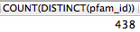
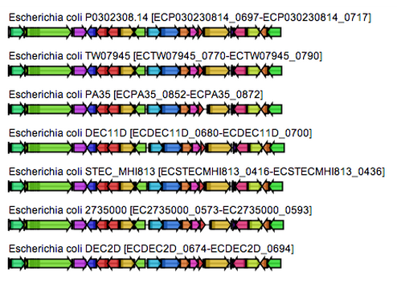
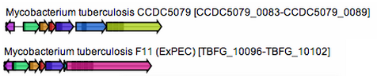

Biosynthetic Gene Cluster Explorer
A data management, clustering, and visualization system
Created by Clinton Cario for Fischbach Lab 2014
Motivation
- Biosynthetic Gene Clusters (BGCs) are proximally close genes in bacteria that produce related enzymes that make biologically active compounds.
- When present in the microbiome, bacterial BGCs can affect human health
- Eg. Bacteroides fragillis => polysaccharide A => host gut inflammation
- Understanding the individual taxa and structure of the microflora is far less important than understanding what they do
- This observation represents a fundamental shift to a more functional approach
Can clustering microflora based on what they produce provide meaningful insight into functional families present in the microbiome?
Project Goals
- Implement comparison measure of BGC similarity developed by Mohamed/Peter
- Use this measure to cluster BGCs into families
- Analyze Bacteroides oligosaccharides
- Develop a way to visualize the results (arrower)
- Characterize interesting or abundant families experimentally in the lab
Outline
- Organizing Data
- Data Management
- Creating the Database
- Querying the Database
- Clustering BGCs
- Visualization
- The BGC Explorer API
Data Management
Given Files
From IMG and Peter's Cluster Finder program
For perspective, ~ 1,000 files looks like this:
~26K files looks like this:
And ~60K looks like this:
That's a lot to process on the fly!
More on this later, but first what do these files look like?
Sequence Files (58,284)
eg. 2500069000_0.fasta
>IMG JGI Gene ID, Locus Tag/Protein name [organism]
sequence
>2500069248 Sugar phosphate permease [Lactobacillus reuteri 100-23]
MENIGNFTVAKRWGSFLLLYLGYMILFADPNPPPPPVMNISLAYIGKDFHVGAAALGATASAFFLGYTLMQIPGGY
LTDKFGSKLMVIISLFTWSLMTMVTGWAWSLAALIAIRFLFGIAEGPYPAAALKRISENYDKSEKSQATSALISSN
YAGAAVAPLIIVPIIASNGWRNAFVWLGVGGFIILLAYYLVERPINSSQENGQARPKIEWKKIDHRVWAFVVIGLA
LNIITKGLETWMPVYFLQEQGINLKNLAWLVPLPVISGGIAAFISGFVMVHLFKKHERWMISIASFLTLVFMFGLF
KSTSLVGVVIFDVLIYFVKSLAFTGIFSFIAQILSEKTYGSSIGIVNFGGQLGGFVGPLLIGWIVQAAGSYSAAFF
GLVISALVAVIACLFIKKA
>2500069249 RNA polymerase sigma factor, sigma-70 family [Lactobacillus reuteri 100-23]
MRFNKEDEEKYLKLINNTRRGSNKDFEELFRRYWPLVRRLWQRYNISGLELADWEQEARVVMLEVIRLYNNQGPRM
FSCFFKECLTNRIRDIQRQTQAHKRIPAGCLYALSDDFAETLTDFSHHSPDDIIYCRQSLDRLLCHCSKFEREVLV
YLHTGYSIAEIAGTLDCSKRSVQSALHRCHGKLLKVLMK
.
.
.
Organism Annotation File
AllOrgsTable.out (13,999 entries)
taxon_oid Domain Status Study Name Genome Name / Sample Name Sequencing Center Phylum Class Order Family Genus Species IMG Genome ID Genome Size Gene Count
644736411 Archaea Finished Thermococcus gammatolerans EJ3 Thermococcus gammatolerans EJ3 Genoscope Euryarchaeota Thermococci Thermococcales Thermococcaceae Thermococcus gammatolerans 644736411 2045438 2206
2524023100 Archaea Draft mesopelagic bacterioplankton Marine Group I thaumarchaeote sp. SCGC AAA288-N15 Marine Biological Laboratory Crenarchaeota unclassifie unclassified unclassified unclassified unclassified 2524023100 144418 307
2264867066 Archaea Permanent Draft GEBA-MDM Diapherotrites archaeon SCGC AAA011-K09 (DUSEL_001_199) DOE Joint Genome Institute unclassified unclassified unclassified unclassified unclassified unclassified 2264867066 316537 384
2515075008 Archaea Permanent Draft Continuation of the Genomic Encyclopedia of Bacteria and Archaea pilot project (GEBA) Methanolobus tindarius DSM_2278 DOE Joint Genome Institute Euryarchaeota Methanomicrobia Methanosarcinales Methanosarcinaceae Methanolobus tindarius 2515075008 3151883 3022
2547132071 Archaea Draft Pan-genome of Methanobrevibacter smithii, in twins Methanobrevibacter smithii TS96C Washington University in St. Louis Euryarchaeota Methanobacteria Methanobacteriales Methanobacteriaceae Methanobrevibacter smithii 2547132071 1818239 1863
2512047039 Archaea Finished Pyrobaculum genomes Pyrobaculum oguniense TE7, DSM_13380 UC Santa Cruz Crenarchaeota Thermoprotei Thermoproteales Thermoproteaceae Pyrobaculum oguniense 2512047039 2452920 3014
2264867225 Archaea Permanent Draft GEBA-MDM Aigarchaeota archaeon SCGC AAA471-I13 (GBS-N_001_17) DOE Joint Genome Institute unclassified unclassified unclassified unclassified unclassified unclassified 2264867225 164795 208
2524023132 Archaea Permanent Draft Dark ocean microbial single cell genomics Euryarchaeota archaeon SCGC AB_633-I06 DOE Joint Genome Institute Euryarchaeota unclassified unclassified unclassified unclassified unclassified 2524023132 316733 385
2547132055 Archaea Draft Pan-genome of Methanobrevibacter smithii, in twins Methanobrevibacter smithii TS146B Washington University in St. Louis Euryarchaeota Methanobacteria Methanobacteriales Methanobacteriaceae Methanobrevibacter smithii 2547132055 1794702 1864
.
.
.
BGC Annotation File
BGC_annotation_final.out (13,910 entries)
Cluster ID BGC Type Organism name ------- BGC Locus Tags -------
(contig_idx) Start locus End Locus Tag
637000276_7 saccharide Bacillus_thuringiensis_sv_konkukian_97-27 BT9727_0525 BT9727_0533
646564655_2 RP Nocardiopsis_dassonvillei_dassonvillei_DSM_43111 Ndas_0216 Ndas_0220
646564655_7 saccharide Nocardiopsis_dassonvillei_dassonvillei_DSM_43111 Ndas_0541 Ndas_0571
646564655_6 PKS Nocardiopsis_dassonvillei_dassonvillei_DSM_43111 Ndas_0488 Ndas_0498
2511244474_8 NRPS Corynebacterium_diphtheriae_INCA_402 CDB402_1065 CDB402_1094
646564655_9 PKS Nocardiopsis_dassonvillei_dassonvillei_DSM_43111 Ndas_0782 Ndas_0799
2511244474_4 saccharide Corynebacterium_diphtheriae_INCA_402 CDB402_0592 CDB402_0598
2511244474_2 Siderophores Corynebacterium_diphtheriae_INCA_402 CDB402_0489 CDB402_0500
2511244474_1 saccharide Corynebacterium_diphtheriae_INCA_402 CDB402_0269 CDB402_0284
643010395_0 PKS Capnocytophaga_sputigena_Capno,_ATCC_33612 CAPSP0001_2646 CAPSP0001_2657
.
.
.
Contig Files (26,496)
eg. 651339065.out
Contig --------- Gene ---------- -- Domain -- Pfam ClusterFinder
ID ID Start End Start End ID Probability
(IMG JGI) (IMG JGI) (nt) (nt) (aa) (aa) (ID/Q) (p)
651339065 651700990 1 2181 163 250 PF08447 0.000992893470247
651339065 651700990 1 2181 290 378 PF08447 2.03138985722e-05
651339065 651700990 1 2181 457 544 PF08447 3.81651944312e-06
651339065 651700990 1 2181 568 671 PF13426 9.31045341573e-05
651339065 651700991 2181 4334 419 528 PF08448 5.48237341596e-05
651339065 651700991 2181 4334 538 604 PF13188 0.000251763613029
651339065 651700992 4327 5436 9 121 PF00072 0.000327810569295
651339065 651700992 4327 5436 232 302 PF13487 0.000603153681124
651339065 651700993 5569 6315 1 234 PF00977 0.000765879584879
651339065 651700994 6321 6944 7 207 PF00117 0.000345660870243
.
.
.
Cluster Files (26,496)
eg. 651339065.clusters.out
--------- Contig --------- --------- Gene ---------- -- Domain -- Pfam ClusterFinder
Cluster ID ID ID Start End Start End ID Probability
(contig_idx) (IMG JGI) (IMG JGI) (nt) (nt) (aa) (aa) (ID/Q) (p)
651339065_0 651339065 651701008 20947 21774 23 152 PF02311 0.228636994952
651339065_0 651339065 651701008 20947 21774 192 270 PF12833 0.264759766456
651339065_0 651339065 651701009 21831 22763 1 310 PF01207 0.302688385193
651339065_0 651339065 651701010 22952 23329 46 115 PF04304 0.318807545006
651339065_0 651339065 651701011 23462 24007 30 154 PF00156 0.325445149269
651339065_0 651339065 651701012 24185 26662 20 179 PF13177 0.356840853132
651339065_0 651339065 651701012 24185 26662 232 367 PF12169 0.389840348177
651339065_0 651339065 651701012 24185 26662 674 820 PF12170 0.190219499291
651339065_1 651339065 651701065 88082 88258 1 55 PF04957 0.499024658636
651339065_1 651339065 651701066 88418 90067 1 547 PF11949 0.600873342604
.
.
.
Examining Data Quality and Character
This determines success of workflow (GIGO principal)
Observations of the data:
- Fairly well structured
- Hierarchical
- Redundant
- High I/O (many files;slow)
- Ideal for a database
Creating the Database
Step 1: Design
Step 2: Populating it
Uses peewee python module:
- Pick database type (SQLITE3)
- Point peewee to it (data/BGCs.db)
- Define tables (BGC_models.py):
class Gene(BGCModel):
gene_id = PrimaryKeyField()
img_gene_id = CharField()
contig = ForeignKeyField(Contig, related_name="genes", null=True)
bgc = ForeignKeyField(BGC, related_name="genes", null=True)
start = IntegerField()
end = IntegerField()
Step 2: Populating it
BGC_databaser:
- Script to iterate over all files and insert into database
- Takes 2 days
- Has 'save' points if population is interrupted
- Run like:
$ python BGC_databaser.py [reset]
Step 3: Optimizing it
(Sharding, indexing, etc...)

Final Results
13,997 organisms in database, 0 failures importing from flat files
13,793 BGCs in database, 117 failures (orphaned)
633,645 genes in database
842,147 domains in database
5,238 unique pfam IDs
120 organisms with "Bacteroides" as genus
6,969 BGCs with "saccharide" as BGC type
437 BGCs w/ organism genus is Bacteroides AND BGC type is saccharide
9,173 Domains w/ genes, BGCs, and organisms AND BGC type is saccharide AND organism genus is Bacteroides
4,781 Same as above but w/ sequences
3,428 Same as above but w/ sequences and annotated (non Q) pfam IDs
1-301 Range in number of domains per pfam
Querying the Database
Querying the database
A few different methods:
- SQLite3 command line
- Using SQL language
- Programatically via python/peewee
- Using python language (BGC Explorer)
- Using a GUI like:
Selecting everything

Results

Selecting specific columns & using WHERE
Results
Joining
Joining
Join Results
DISTINCT
DISTINCT results
COUNT DISTINCT
COUNT DISTINCT results
Clustering BGCs
What do BGCs look like?
Shown using a modified version of the arrower.py script (Peter)
How conserved are they between taxa?
Sometimes very.
Other times slightly less so.
Sometimes not in obvious ways.
So, what is the best way to cluster/compare them?
- There is no best way
- Could use gene/protein sequence identity
- Won't handle repeated/multiple (domain) sequences correctly
- Could borrow diversity indices from ecology
- Misses subtle sequence differences
- How about a hybrid approach?
- We are most interested in function, so will mostly consider domains
Four Measures
- Jaccard
- Diversity
- S
- The Lin metric
- DDS
- Domain duplication
- Peter/Mohamed
- Combination of above
Jaccard
Number of shared domains over unshared

S (Lin)
Number of domains in the BGC with more domains

DDS
Difference in domain number over total with distance penalty:
Distance Penalty
(Similarity Reward?)
- All vs. All pairwise similarity
- Munkres
Pairwise vs. Munkres
Pairwise (averaged distances)
Munkres (summed distances)
Lines represent best matches
Peter/Mohamed Metric
Weighted Combination of Jaccard and DDS/S
Empirically Determined
Computing Pairwise BGC Similarity
- Now we have a metric, use it to compare all BGCs of interest
- Can be done after BGC database filters are set
- Values are stored in the database for faster retrieval later
Visualization
Networks
Networks are often used to represent entity relationships

Networks
Node edges can have weights (in this case indicating similarity)
Networks
Edges can pruned based on edge weights to cluster
MCL
- A method to prune edges automatically
- Takes a stochastic approach
- Given a node, algorithm takes edge with probability proportional to weight
- More connected clusters have more edges, which increases probability of selection
- After a set number of iterations, edges with low traversal are removed
- This process can be repeated
- 'Inflation' (I) parameter is used to adjust sensitivity
Bubbles
- After MCL, remaining clusters can be grouped into circles
- Size of circle represents number of BGCs per group
Implementation
Both networks and bubble clusters were implemented as ways to explore BGC groupings
The BGC Explorer API
An example usage
6 simple steps
(starred only need to be done the first time)
- Import the library
- Initialize Database Filter
- * Compute BGC comparisons
- * Add additional NCBI information
- Cluster
- Visualize
import BGCExplorer
NRPS = BGCs(filters={'Kind':"NRPS"})
NRPS.compare_bgcs()
NRPS.augment()
NRPS.cluster()
NRPS.visualize_clusters()
-- or --
NRPS.visualize_network()
Database Filters
ORGANISM
========
KEY Type
domain string or list
phylum string or list
class string or list
order string or list
family string or list
genus string or list
species string or list
taxon id int, string, or list
status string or list in ["Finished", "Draft", "Permenant Draft"]
sequencing center string or list
img genome id int, string, or list
genome name string or list
genome name key string or list
genome size int, string, or list
gene count int, string, or list
CONTIG
======
contig int, string, or list
BGC
===
cluster string or list
cluster idx int, string, or list
kind string or list
start locus tag string or list
end locus tag string or list
GENE
====
img gene id int, string, or list
start int, string, or list
end int, string, or list
DOMAIN
======
pfam id string or list
sequence string or list
cluster finder prob float, string, or list
SEQUENCE
========
locus tag string or list
sequence string or list
Cluster Options
cluster(self, measure="similarity", cutoff=0.35, use_mcl=True, I=3.5, prefilter=True, keep_singletons=False, verbose=True)
Visualization Options
visualize_clusters(self, verbose=None, show_domains=True, color_key='pfams', group_nodes=True)